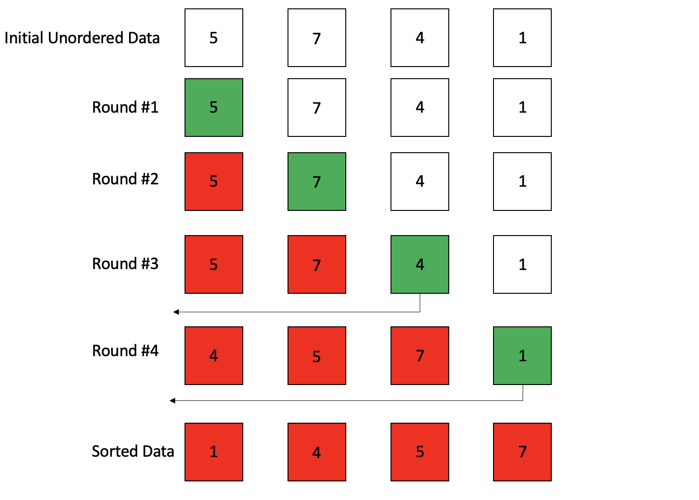
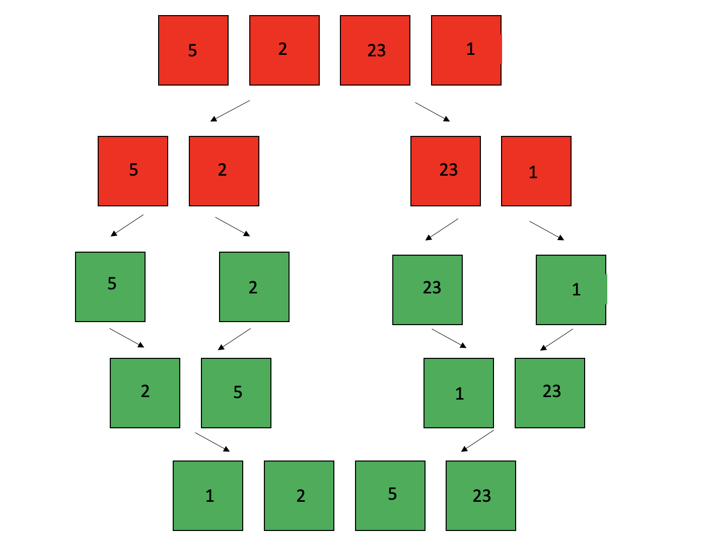
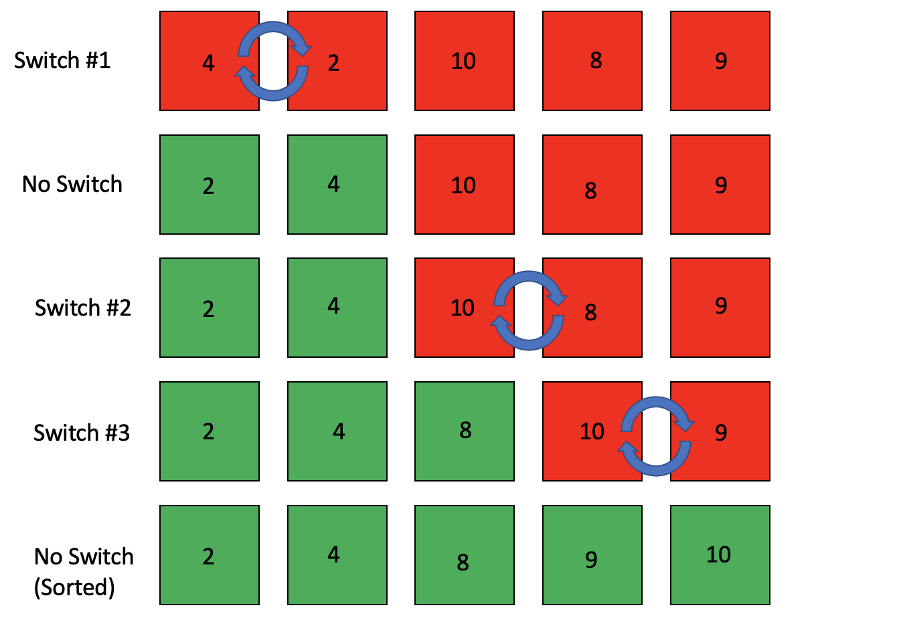

Algorithms
For those who aren't really sure what an algorithm is, it is essentially a function that is able to organize data in a very specific way. The easiest example of an algorithm is a sorting algorithm that organizes a set of numbers in increasing form. While algorithms are not limited to numbers, it is definitely one of the most common ways they are used. But you might be asking yourself, what is the point of using algorithms anyway? Well the main reason that they are useful is because they allow for better organization of data. Let's say that you have a roster of students in a class of 300 students. If someone were to ask you to make a list of the students and sort is by last name, sure, you could take the time to make the list yourself and manually organize it. However, the saying work smarter not harder exists for a reason. It would be so much easier to make an algorithm that could sort the students by last name automatically, saving you time and the possibility of making an error (assuming your algorithm is correct). Now for the sake of simplicity, I will only be talking about sorting algorithms and their use in an array of numbers. While there are tons of different sorting algorithms, I will only be going over a few of the basic ones because I believe a strong knowledge of the simple algorithms are the stepping stone of being able to learn complex ones, and possible create new ones!
Types of Sorting Algorithms
Insertion Sort
Insertion sort is likely the very first sorting algorithm that a beginner programmer would learn. This is because the algorithm is very easy to understand, and being able to locations of different elements while the sorting is happening is quite easy. The way insertion sort works is that when given an array of unordered integers, insertion sort will go from left to right of the array until it has reached the end of the array. It checks to see where in the array the element should go. If it is lower than the previous element, it will move it to the left until it is back to the beginning of the array, or it has found an element less than or equal to it. Here's an example with an array of 4 elements.
Merge Sort
Merge sort works by taking an array of data, and splitting the data into smaller arrays until there are single nodes of data. It then takes those elements and sorts them into smaller ordered arrays until an array that was the size of the original array, but it is now ordered.
Bubble Sort
Bubble sort works similar to insertion sort, however instead of moving elements to their respective spots immediately, two elements are simply switched. So when two elements are compared, if the element to the right is lower than the one on the left, then they are switched. It does this until the end of the array has been reached. If the array has made no switches after n amount of array iterations, then that means that the array has been sorted.
Heap Sort
Heap sort is a special algorithm, as it utilizes a data structure for the basis of its algorithm. If you have already checked the Data Structures page of this website, then you know that a heap is represented by a tree. A heap can also be represented by an array, although it is far more complex than what has been shown above. It also depends on whether or not you have a min-heap or a max-heap. Heap sort also requires the use of multiple functions in order to organize the data.
Running Times
Now while these sorting algorithms are all great, each of them have different run times. A run time will tell us how great an algorithm is, and can greatly influence your decisions on a certain algorithm. It should be stated that the best run time for an algorithm is O(1), and the worst possible is O(n^2).
| Algorithm | Best Case | Average Case | Worst Case |
|---|---|---|---|
| Insertion Sort | Ω(n) | Θ(n^2) | O(n^2) |
| Merge Sort | Ω(n log(n)) | Θ(n log(n)) | O(n log(n)) |
| Bubble Sort | Ω(n) | Θ(n^2) | O(n^2) |
| Heap Sort | Ω(n log(n)) | Θ(n log(n)) | O(n log(n)) |